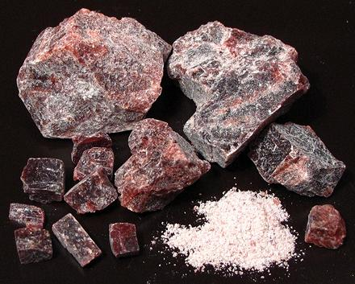

Black Salt

[Kala Namak, Bire noon, Pada loon, Bit lobon, Sanchal (India)]
This salt used as a finishing salt both in North America and India, but in
India is also important in recipes, particularly for Chaat Masala, a very
important seasoning for street vendors. It is also included in some chutneys,
sprinkled on fruit, and used to flavor lemonade and similar drinks. It is
used by vegans to replace the sulfurous character of eggs.
Natural salts containing sulphates are mined in volcanic regions, and are
then heated in a kiln for 24 hours, sealed in a ceramic jar with charcoal and
possibly some other organic materials. This converts the almost colorless
natural salts to Black Salt and develops the strong smell and taste of sulphur
by converting the natural sulphates to sodium sulphide, iron sulphide, and
hydrogen sulphide. Ground, Black Salt is usually a grayish pink color.
Today it is also manufactured from regular salt, combined with sodium
sulfate, sodium bisulfate and ferric sulfate. This is heated in a kiln with
charcoal the same as with the mined salts to convert those to sulfides.
More on Salt.
Buying:
This product can be found in markets serving a
primarily Indian community, or can be purchased on-line. I suggest buying
it in chunks, as it is rumored "alternative" methods are sometimes used
to make powdered products. Do not confuse this product with Hawaiian
Black Salt or Cyprus Black Salt, those are just sea salt mixed with
charcoal.
Health & Nutrition:
Some sulphur is necessary in a
healthy diet, as it is needed for synthesis of some proteins. Current
evidence is that natural foods containing sulphur provide a sufficient
amount, but some diets may be deficient. The wonderful flavor of fried
Onions (and the tears) are largely from high sulphur content. Those
forbidden onions by religion often fill the sulphur gap with the resin
asafoetida, also high in sulphur.
sa_sablkz 211108 - www.clovegarden.com
©Andrew Grygus - agryg@clovegarden.com - Photos
on this page not otherwise credited © cg1
- Linking to and non-commercial use of this page permitted